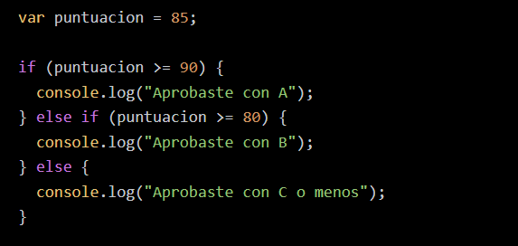

La sintaxis básica de JavaScript define cómo escribir instrucciones para que el navegador pueda interpretarlas y ejecutarlas correctamente. JavaScript es un lenguaje sensible a mayúsculas y minúsculas, por lo que Variable y variable son diferentes.
A continuación se presentan algunos elementos básicos de la sintaxis de JavaScript La sintaxis básica de JavaScript incluye el uso de declaraciones terminadas en punto y coma (aunque a menudo son opcionales), distinción entre mayúsculas y minúsculas, y el uso de llaves {} para bloques de código. JavaScript utiliza nombres de variables y funciones con símbolos alfanuméricos y guiones bajos, y tiene operadores aritméticos, de comparación y lógicos similares a C y Java.
var, let y const.number, string, boolean, null, undefined y object.let nombre = "Juan";
const edad = 30;
var esEstudiante = true;
JavaScript utiliza estructuras de control como if, else, switch, y bucles como for, while para controlar el flujo del programa.

Las funciones son bloques reutilizables de código que realizan una tarea específica. Se pueden declarar de diferentes formas:
function saludar(nombre) {
return "Hola, " + nombre + "!";
}
const suma = (a, b) => a + b;
console.log(saludar("Ana"));
console.log(suma(5, 3));En JavaScript, hay dos tipos de comentarios: de una sola línea y de múltiples líneas. Los comentarios son líneas de código que el intérprete ignora, y se utilizan para agregar notas explicativas al código
Se utilizan para agregar comentarios breves en una sola línea. Se indican con dos barras diagonales (//) al principio de la línea. Todo lo que sigue a // hasta el final de la línea se considera un comentario y no se ejecutará.
/*
Comentario
de varias líneas
*/Este código declara una variable nombre y muestra un saludo personalizado en la consola.